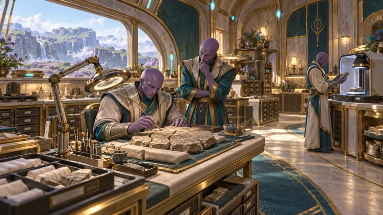

Hiring
Careers
If you want to build a world you can walk, this is the letter. Since November 18, 2025, Sherif Botros has run Autonomicity Games Inc. solo and fully AI-assisted. The studio plans to hire. Executives are included. Today it is still one person.
The direction is older than the company. Since 2003 he has followed TOLC (True Original Lord Creator), his north star, toward the world's problems, including global diplomacy and realistic abundance. That direction led to the video game Powrush. Building Powrush led to Ra-Thor, the system behind Rathor.ai. Ra-Thor now helps build Powrush-MMO, and Living Thunder, the comic and animated series. The game is in development. Online play is not live. The work on the table is a climate you walk, a harvest with mercy, and a resource-based economy you learn by playing.
Autonomicity Games Inc. was founded in Canada on March 17, 2016. The name has been a play on AGI since 2016.
If this is your work, write to info@Rathor.ai. Say who you are, and what you would build.
Cultural principles
Revised in 2026 from the studio’s 2016–2017 principles. Since November 18, 2025, the studio has been one person, Sherif Botros, working fully AI-assisted with Ra-Thor, the system behind Rathor.ai, and a council of AI Mates. The name has carried AGI in it since 2016. These principles keep that help honest. When the studio hires, these are the principles it will hire for.
- Integrity, without overclaim. We say what we do and do what we say, with players, partners and competitors alike. What is live is called live, what is planned is called planned, and nothing is dressed up to look finished.
- One accountable steward. Ra-Thor and the PATSAGi Councils deliberate and vote, but a vote is counsel, not cover. A named human makes the final call and answers for it.
- Bounded, corrigible AI. Ra-Thor’s ethics are hard-coded, and every AI Mate works inside clear bounds. Any of them can be corrected, overruled or stopped by the human in charge.
- Small steps, pinned reviews. Our speed comes from small increments: one pull request at a time, each review pinned to the exact commit under review.
- Catch errors in the open. Mistakes are expected, and reasonable, recoverable risks are welcome. Errors are surfaced and fixed rather than hidden, and each one becomes a check so it is not repeated.
- One crew, human and AI. No task is below or above anyone, human or Mate, as long as it is ethical. Everyone works as an owner of the whole.
- Realistic abundance. Every resource counts, so value is weighed against cost before anything is spent. Good ideas are recycled rather than thrown away, toward a world with enough for everyone, built in reachable steps.
- Keep learning. Learning is self-driven, drawn from reputable sources, and tested before it is trusted. When the studio grows, those already here help newcomers thrive.
- Open, diplomatic, good-humoured. We speak plainly and disagree as debate, never as a feud. We practise the diplomacy we hope to see between nations, and use humour with taste, never at anyone’s expense.
- Passionate dedication. Work on what you love, with love, and persevere through the hard parts that earn the chance to do more of it.